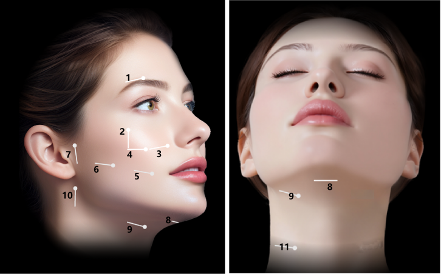

半岛大超炮标准化实操 SOP · 核心逻辑
维韧 WITHIN 打法
从“看见结构”到“自然年轻”
别急着“打”——
先把路线看清楚。
先把路线看清楚。

兔坚持 · 今日领航员
01 · WHY
答案藏在影像里。
请选择后揭晓

21 个探测点位10 组对称位点 + 1 个正中位点
路线不一样，
导航当然不能复制粘贴。
TAKEAWAY
维韧，不是参数口诀
而是临床决策顺序
看影像先行→
识识别靶层→
锁精准锁定→
分分层治疗→
整整合决策→
自然结果目标
WITH 医生同行 · IN 深层年轻
路线记住了吗？
先看清，再出发。
先看清，再出发。
内容依据：《维韧打法简介-定稿》《半岛大超炮标准化实操-定稿（正文版）》